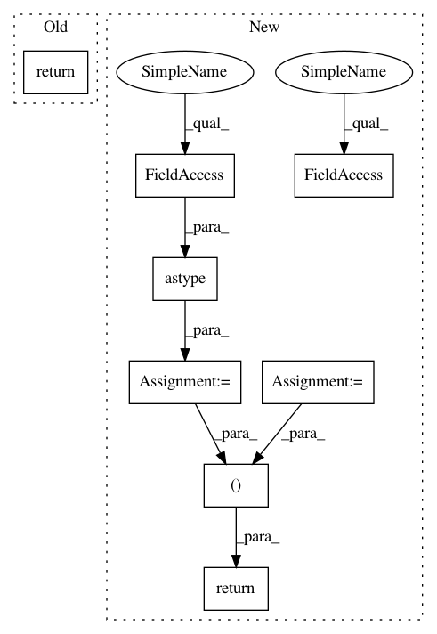

c9372b470e1ba6c23ad03ec6bcbc9d25b20db1fb,chainer/functions/normalization/batch_normalization.py,_CudnnBatchNormalizationImpl,backward,#_CudnnBatchNormalizationImpl#Any#Any#Any#Any#Any#Any#Any#Any#Any#Any#,228
Before Change
def backward(self, axis, gamma, gy, x, xp,
expander, mean, inv_std, eps, var):
return cudnn.batch_normalization_backward(
x, gamma, gy, mean, inv_std, eps,
self.is_for_conv2d, self.cudnn_mode,
chainer.is_debug())
if cuda.cudnn_enabled:
cudnn = cuda.cudnn
After Change
chainer.is_debug())
gx = gx.astype(x.dtype, copy=False)
ggamma = ggamma.astype(gamma.dtype, copy=False)
gbeta = gbeta.astype(gamma.dtype, copy=False)
return gx, ggamma, gbeta
if cuda.cudnn_enabled:
cudnn = cuda.cudnn
In pattern: SUPERPATTERN
Frequency: 3
Non-data size: 8
Instances
Project Name: chainer/chainer
Commit Name: c9372b470e1ba6c23ad03ec6bcbc9d25b20db1fb
Time: 2019-09-30
Author: tianqi@preferred.jp
File Name: chainer/functions/normalization/batch_normalization.py
Class Name: _CudnnBatchNormalizationImpl
Method Name: backward
Project Name: luispedro/mahotas
Commit Name: 09349c5bf9eb8ebc3fdc6173b42bcfd9dac25f45
Time: 2010-11-01
Author: lpc@cmu.edu
File Name: mahotas/lbp.py
Class Name:
Method Name: lbp
Project Name: chainer/chainer
Commit Name: c9372b470e1ba6c23ad03ec6bcbc9d25b20db1fb
Time: 2019-09-30
Author: tianqi@preferred.jp
File Name: chainer/functions/normalization/batch_normalization.py
Class Name: _CudnnBatchNormalizationImpl
Method Name: backward
Project Name: chainer/chainercv
Commit Name: de158b4e37667172f0bf618fde5098739564acba
Time: 2018-05-25
Author: Hakuyume@users.noreply.github.com
File Name: tests/links_tests/model_tests/yolo_tests/test_yolo_base.py
Class Name: DummyYOLO
Method Name: __call__